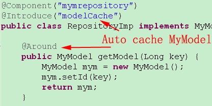

Quick Start
Maven pom.xml <dependency> this quickStart's source code in github
1. keep domain model in-memory cache:There are two steps: (1) annotate your aggregate root with @Model @Model
public class MyModel {
private String Id;
private String name;
....
}
full code see MyModel.java
(2) annotate your factory/repository of the aggregate root with @Introduce(“modelCache”)
When a domain model object with @Model is fetch from repository, we need use @Introduce(“modelCache”) to mak the object live in memory. @Introduce(“modelCache”) must be annotated in the interfaces that @Model objects are created or reconstructed , the interfaces is such as repository class. DDD think repository is the transfering betwing the database data and domain object. This step is very important for domain events  full code: RepositoryImp.java
2.annotate a Producer class @Introduce("message")
in this class, there are Producer's fire/emit method with @Send("mytopic"); such as @Send("MyModel.findName"). @Introduce(“message”)："message" is the om.jdon.domain.message.MessageInterceptor configured in aspect.xml It means introducing a MessageInterceptor for this class. @ Send("mytopic"): "mytopic" is your topic name that equals to the "mytopic" in @Consumer("mytopic"); full code :MyModelDomainEvent.java
3. annotate a Consumer class with @Consumer("mytopic"); or @OnEventin above step, MyModelDomainEvent.java have two topic: "MyModel.findName" and "saveMyModel", we must implement two consumer classed to listen/observe these topic. first topic consumer class:
the class must annotate with Consumer, and implements interface com.jdon.domain.message.DomainEventHandler, and accomplish its method "onEvent". in this method you can get the Event(value object, such as orderCreated ), here is FindNameEvent:
but maybe you wonder where the "FindNameEvent" instance comes from? in Procuder class, the method "asyncFindName" returns a type DomainMessage, and the code is "return new DomainMessage(findNameEvent)", yeah, the findNameEvent is input. in general, we should input a DomainEvents, such as "new OrderCreated(xx,xx)" , donot directly put entity instance.
another consumer annotation is @OnEvent, it can annotate any class with @Component:
the topic "saveMyModel" consumer is RepositoryImp, in this repository we just find the aggregate root "MyModel" instance, and we can save the model by "save(MyModelCreatedEvent myModelCreatedEvent)", here method parameter MyModelCreatedEvent is from the producer's method return's object(DomainMessage). myModelCreatedEvent as event object is too recommended, in general, we transfer a domainevent such as new OrderSaved(), if you saving the domain events, you can replay them to get root entity's state, this is called Event Soucing.
4. combine producer with root entitynow we have a producer and two consumer, we need introduce the producer into our aggregate root entity:
@Inject is used to inject any class instance into domain model, here we inject our procuder MyModelDomainEvent. and in save() method, we invoke "myModelDomainEvent.save(new MyModelCreatedEvent(..))" to implement fire a domain event, such as new OrderSaved(); here, getName() method send a lazy-load event.
5. Clientall main steps finished. Service is a bounded context, and is a client for our aggregate:
Service's invoking :
this quickStart's source code in github
|
|